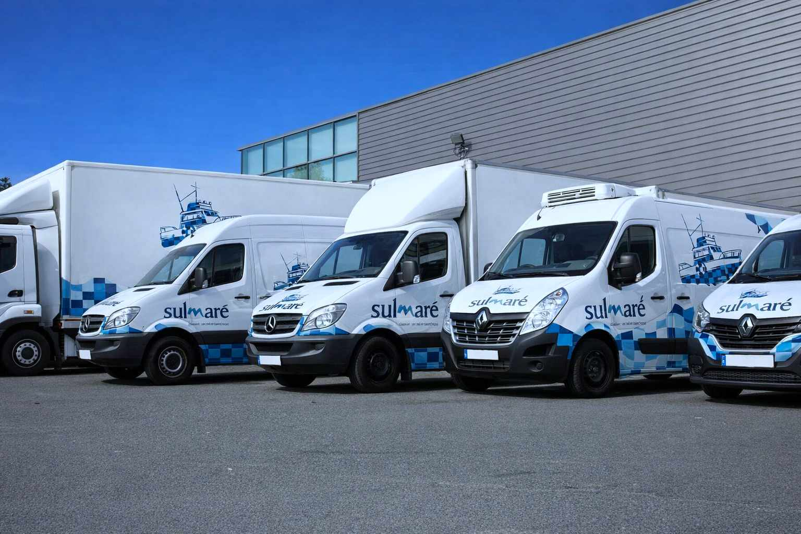
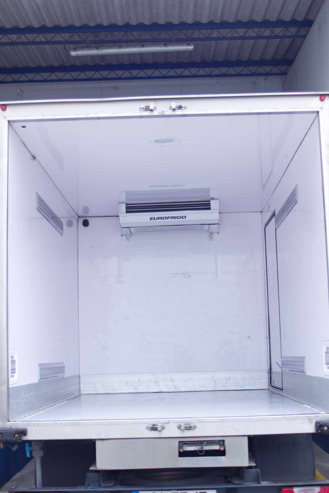
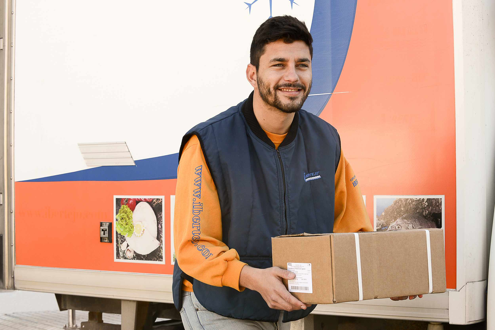

Frota, Equipamentos e Tecnologia
Transporte refrigerado com rigoroso controlo de temperatura e tecnologia avançada para chegar a qualquer destino.

Frota Moderna
Veículos refrigerados de última geração equipados com sistemas de frio de alta precisão.

Temperaturas Flexíveis
Controlo rigoroso entre 0ºC e -25ºC, adaptado às necessidades de cada tipo de pescado.
Monitorização GPS
Rastreamento em tempo real da localização e da temperatura da carga em trânsito.

Distribuição Eficiente
Capacidade de entrega para cargas completas ou parciais com rotas otimizadas.